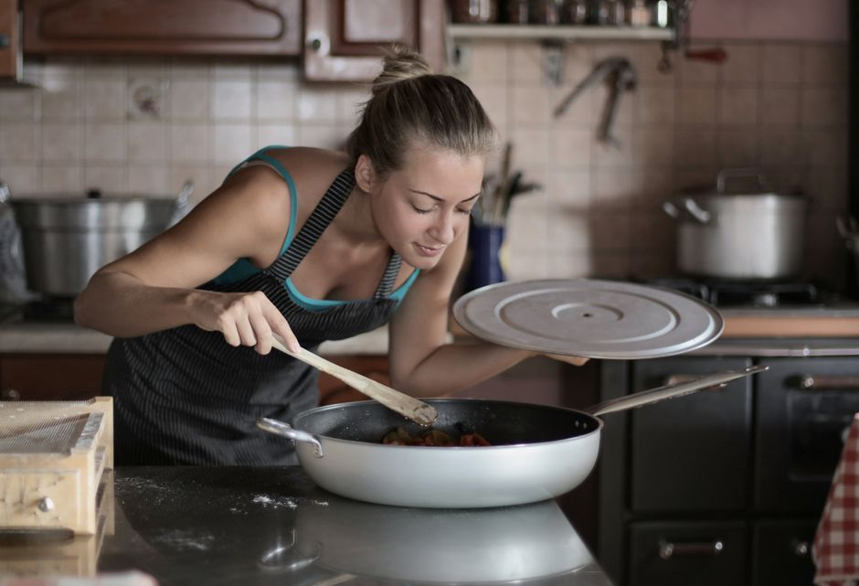

キッチン
一人暮らしの自炊を時短にするキッチン収納の配置のコツ
2026-09-16

自炊は続けたいけれど、準備や片付けに時間がかかって面倒に感じることはないでしょうか。実は道具の置き場所を見直すだけで、毎日の調理の手間はかなり減らせます。今回は、使用頻度や動線に着目したキッチン収納の考え方を紹介します。
使用頻度で仕分けて「ゴールデンゾーン」に置く
キッチン収納では、目線から腰の高さまでの範囲が「ゴールデンゾーン」と呼ばれ、体をかがめたり伸ばしたりせずに手が届くため、最も使いやすい場所とされています。まずは持っているキッチン用品を「毎日使うもの」「週に数回使うもの」「年に数回しか使わないもの」に分けてみると、何をどこに置くべきかが見えてきます。電子レンジや炊飯器のように毎日使う家電や調理器具はこのゴールデンゾーンに配置し、逆に使用頻度が低いものは吊戸棚の上段や足元の奥といった、少し取り出しにくい場所へ移すのが基本的な考え方です。こうして頻度別に置き場所を分けるだけでも、調理のたびに道具を探す時間を減らせます。
冷蔵庫・シンク・コンロの動線に沿って配置する
キッチンには、冷蔵庫、シンク、調理台、コンロ、配膳台・食器棚という基本的な作業の流れがあり、特に冷蔵庫・シンク・コンロの3点を結ぶ動線は「ワークトライアングル」と呼ばれています。この動線を意識し、道具を使う場所のすぐ近くに収納するのが効率化のポイントです。例えば鍋やフライパンはコンロの下、ザルやボウル、洗剤といった水回りで使うものはシンクの下に収納すると、調理中に離れた場所まで取りに行く手間がなくなります。一人暮らしのキッチンは動ける範囲が限られていることが多いため、この「使う場所の近くに置く」という原則を徹底するだけでも、一連の調理動作がスムーズになりやすいです。
鍋やフライパンは重ねずに「立てる収納」へ
鍋やフライパンは戸棚に重ねて収納しがちですが、この置き方だと下のものを取り出す際に上のものをいったんどかす必要があり、地味に時間がかかります。そこで活用されているのが、スタンド型のファイルボックスなどを使って鍋やフライパンを立てて収納する方法です。立てて並べることで一つひとつを独立して取り出せるようになり、重ねて収納する場合に比べてスペースを無駄なく使いながら、必要なものだけをさっと取り出しやすくなります。狭いキッチンでは収納スペース自体を増やすのが難しいこともありますが、収納の向きを変えるだけで使い勝手が改善するケースは多いようです。
調理器具はフックで「ワンアクション」収納にする
お玉やフライ返しなどの調理器具は、引き出しにしまうと取り出す・戻すという2つの動作が必要になりますが、フックに吊り下げておけば1回の動作で使える「ワンアクション収納」にできます。壁面にマグネットが使えるタイプであれば小物をフックにかけて収納できますし、賃貸などで壁に穴を開けられない場合は、キッチンと背面の壁の間に突っ張り棒を渡して吊り下げ収納として活用する方法もあります。頻繁に使う調理器具ほど、しまう手間そのものをなくす工夫をしておくと、後片付けの負担も軽くなります。
調理家電はワゴンにまとめて可動式にする
一人暮らしのキッチンはスペースが限られているため、調理家電の置き場所に悩むことも多いです。対策の一つとして、キッチンワゴンに家電をまとめて置き、使うときだけコンセントを差して使用し、使い終わったらコンセントを抜いてワゴンごと部屋の隅に移動させるという方法があります。こうすることで、普段はキッチン周りをすっきりさせておきながら、必要なときだけ道具を呼び出せる状態を作れます。また、コンパクトなモデルの調理家電を選ぶこと自体も、収納スペースに困りがちな一人暮らしのキッチンでは有効な工夫とされています。
キッチン収納は、使用頻度・作業動線・取り出し方という3つの視点で見直すことで、無理な模様替えをしなくても使いやすさが変わってきます。まずは手元にある道具の置き場所を一つずつ点検してみるとよいかもしれません。


読み込み中...